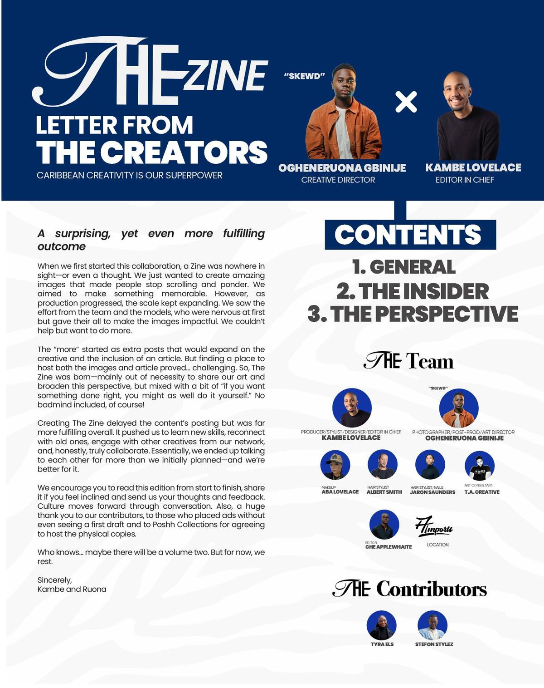
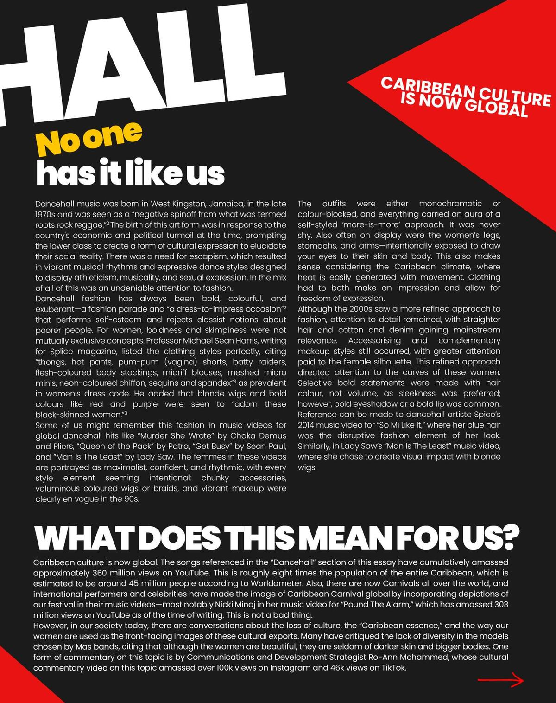
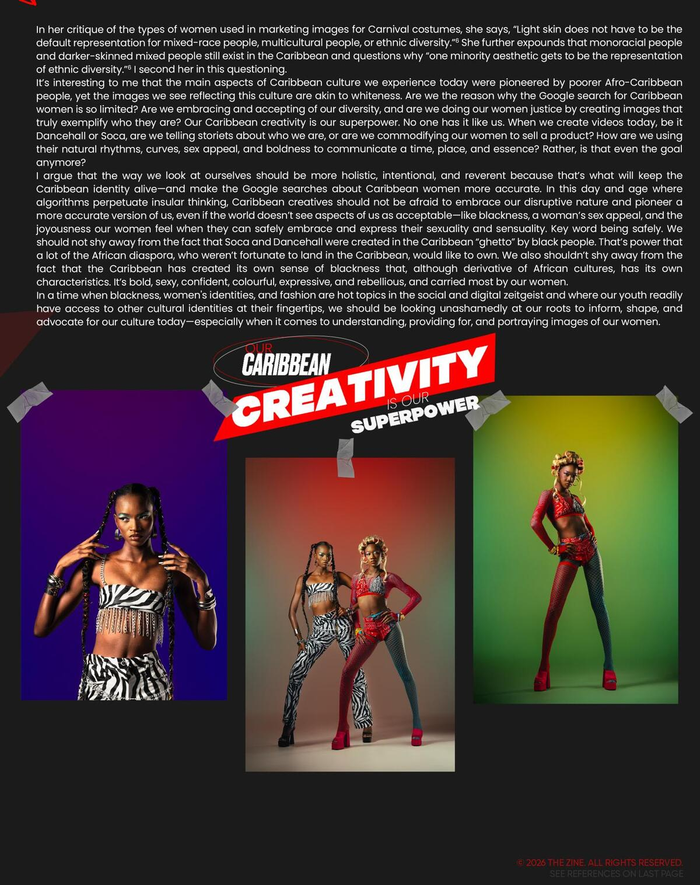
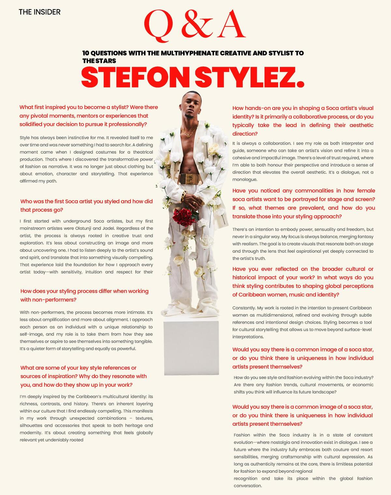
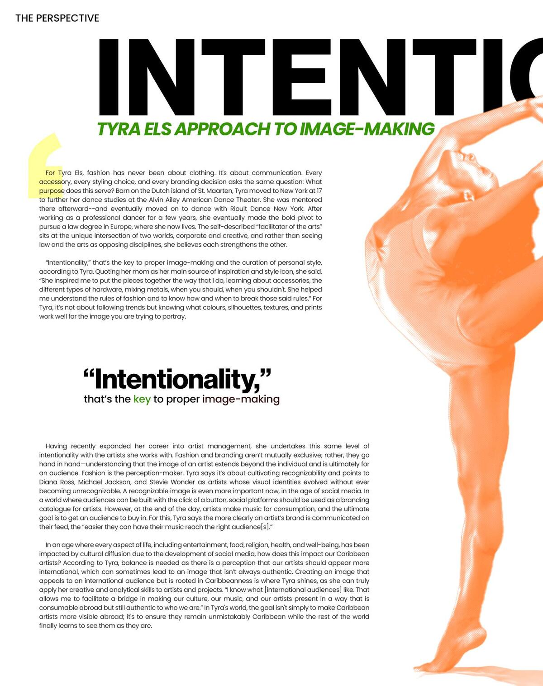

Before it was a runway reference, it was a fete. Long before dancehall and soca made it onto European mood boards, the wardrobe of the Caribbean woman was being written on the road — at Carnival, in the dancehall, on a blocked-off street with a sound system idling at the corner. This is the story of how the riddim dressed us.
The Zine's debut issue traces that lineage — from the beading and mesh of a J'ouvert costume to the low-rise, high-shine silhouette that soca and dancehall exported to the world. It's a story about clothes, but really it's a story about who got to define glamour on their own terms, in their own climate, to their own beat.

"Dancehall dressing was never an accident," the issue argues — it was armor and invitation at once: cut close enough to move in a fete that lasts till sunrise, bold enough to be seen from the back of the block. Soca did something similar in daylight, trading dancehall's shine for feathers, paint, and a wardrobe built for the road march rather than the dance floor.
Glamour, on our own terms.


In Conversation
The Zine sat down with artist manager and entertainment lawyer Tyra Els to talk about how Caribbean music shapes the business — and the image — of the artists she represents.
On the relationship between sound and style
[Paste Tyra Els' exact quote from the print interview here. The Zine's original PDF has this text baked into a flattened image layout, so it couldn't be pulled automatically — drop the verbatim quote in and it'll sit in this space at full editorial weight.]
On what she looks for when an artist is building an image
[Paste the next quote/answer here.]
On where Caribbean fashion is headed next
[Paste closing quote here.]

What The Zine's photography keeps returning to is proximity — clothes shot close enough to see the sweat, the wear, the way fabric moves differently at 2 a.m. on a Carnival Tuesday than it does on a shoot day. That's the throughline of the issue: fashion as a document of how a culture actually moves, not how it's staged to look from a distance.
